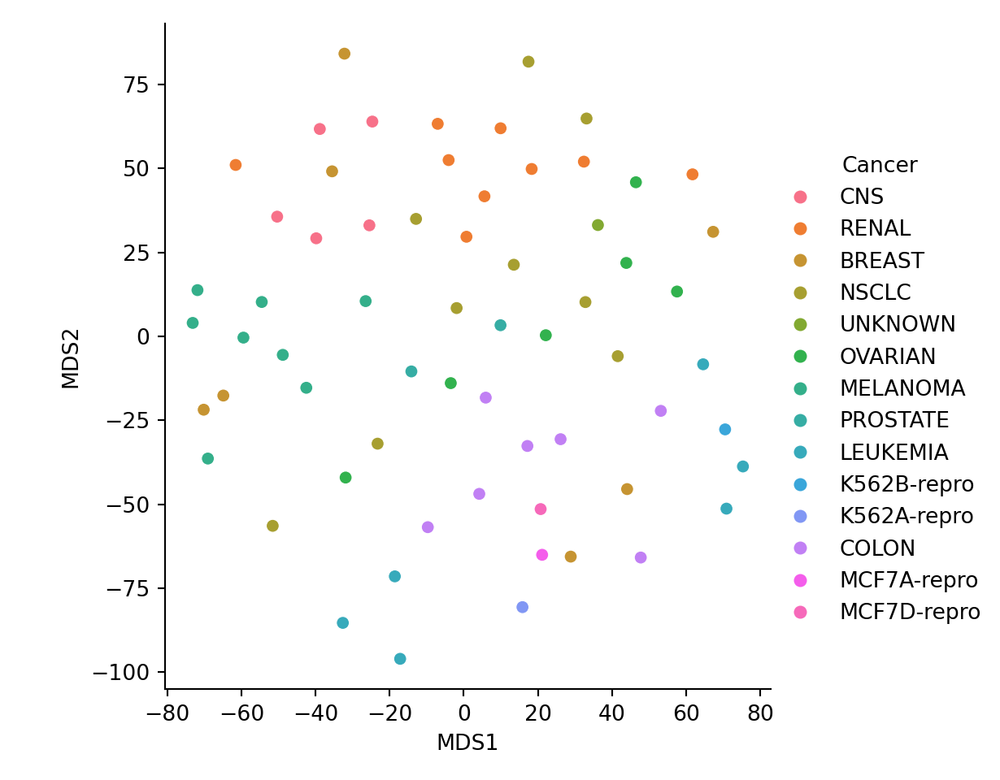

Chapter 5 Other Topics
5.1 K-nearest neighbors
The kNN algorithm uses the entire training data as its “model”. So, there really is no training, however, to make predictions, this can take a long time (need to find distances from new observations to training data and find the nearest k neighbors!). The knn command in R is for classification (categorical response).
####Note: Bare has 16 missing values. From decision tree, this variable does not seem as important as the other variables, so will be dropped for this illustration.
set.seed(7515)
perm=sample(1:699)
BC_randomOrder=BCdata[perm,]
train = BC_randomOrder[1:floor(0.75*699),-c(1,7)]
test = BC_randomOrder[(floor(0.75*699)+1):699,-c(1,7)]
train.x=subset(train,select=-Target)
train.y=as.factor(train$Target)
test.x=subset(test,select=-Target)
test.y=as.factor(test$Target)
predict.test=knn(train.x,test.x,train.y,k=3)
sum(predict.test != test.y)/175## [1] 0.05714286However, we just chose the value of 3 for k. Is this the best k value? We can “tune” this parameter to find the best k…
k.attempts=seq(1,15)
pred.error=vector(length=15)
temp.val=vector(length=20)
for (i in 1:length(k.attempts))
{for (j in 1:length(temp.val))
{perm=sample(1:699)
BC_randomOrder=BCdata[perm,]
train = BC_randomOrder[1:floor(0.75*699),-c(1,7)]
test = BC_randomOrder[(floor(0.75*699)+1):699,-c(1,7)]
train.x=subset(train,select=-Target)
train.y=as.factor(train$Target)
test.x=subset(test,select=-Target)
test.y=as.factor(test$Target)
predict.test=knn(train.x,test.x,train.y,k=i)
temp.val[j]=sum(predict.test != test.y)/175}
pred.error[i]=mean(temp.val)}
all.dat=data.frame(cbind(k.attempts,pred.error))
ggplot(all.dat,aes(x=k.attempts,y=pred.error))+geom_line()+labs(x="Values for k",y="Test error")
5.1.1 K-nn in Python
from sklearn.neighbors import KNeighborsClassifier
from sklearn.metrics import accuracy_score
xtrain_py=r.trainx
xtest_py=r.testx
ytrain_py=r.trainy
ytest_py=r.testy
knn3 = KNeighborsClassifier(n_neighbors = 3)
knn3.fit(xtrain_py, ytrain_py)KNeighborsClassifier(n_neighbors=3)In a Jupyter environment, please rerun this cell to show the HTML representation or trust the notebook.
On GitHub, the HTML representation is unable to render, please try loading this page with nbviewer.org.
KNeighborsClassifier(n_neighbors=3)
y_pred_3 = knn3.predict(xtest_py)
print("Accuracy with k=3", accuracy_score(ytest_py, y_pred_3)*100)## Accuracy with k=3 96.571428571428575.2 MDS
Multidimensional Scaling is an alternative to PCA in terms of visualizing high dimensional data in a lower dimension. IF you will be using this data for future analysis (for example, clustering), then PCA would be recommended. However, if you are trying to visualize your data, MDS is a good alternative that can be explored! The nice thing about MDS is that it does provide some measures of how it does when it reduces the dimension.
For example, in classical MDS, you get a measure for the goodness-of-fit (want this number closer to 1…would at least like 0.8). When performing non-metric MDS, you can get the stress of reduction (want this number close to 0).
pca_ex=prcomp(arrest.scal,scale=F)
pve = 100 *pca_ex$sdev^2/sum(pca_ex$sdev^2)
plot(cumsum(pve),type="l")
graph.pca=data.frame(cbind(pca_ex$x[,1:2]))
colnames(graph.pca)=c("PCA1","PCA2")
graph.pca$PCA1=as.numeric(graph.pca$PCA1)
graph.pca$PCA2=as.numeric(graph.pca$PCA2)
ggplot(graph.pca,aes(x=PCA1,y=PCA2))+geom_point()+labs(y="PCA2",x="PCA1",title="PCA visualization")
d=dist(arrest.scal)
mds_ex=cmdscale(d,eig=TRUE, k=2)
graph.mds=data.frame(mds_ex$points)
colnames(graph.mds)=c("MDS1","MDS2")
graph.mds$MDS1=as.numeric(graph.mds$MDS1)
graph.mds$MDS2=as.numeric(graph.mds$MDS2)
ggplot(graph.mds,aes(x=MDS1,y=MDS2))+geom_point()+labs(y="MDS2",x="MDS1",title="metric MDS visualization")
ex_MDS= NCI60$data
pca_ex=prcomp(ex_MDS,scale=T)
pve = 100 *pca_ex$sdev^2/sum(pca_ex$sdev^2)
plot(cumsum(pve),type="l")graph.pca=data.frame(cbind(pca_ex$x[,1:2],as.character(NCI60$labs)))
colnames(graph.pca)=c("PCA1","PCA2","cancer")
graph.pca$PCA1=as.numeric(graph.pca$PCA1)
graph.pca$PCA2=as.numeric(graph.pca$PCA2)
ggplot(graph.pca,aes(x=PCA1,y=PCA2,color=cancer))+geom_point()+labs(y="PCA2",x="PCA1",title="PCA visualization")
d=dist(ex_MDS)
mds_ex=cmdscale(d,eig=TRUE, k=2)
graph.mds=data.frame(cbind(mds_ex$points,as.character(NCI60$labs)))
colnames(graph.mds)=c("MDS1","MDS2","cancer")
graph.mds$MDS1=as.numeric(graph.mds$MDS1)
graph.mds$MDS2=as.numeric(graph.mds$MDS2)
ggplot(graph.mds,aes(x=MDS1,y=MDS2,color=cancer))+geom_point()+labs(y="MDS2",x="MDS1",title="metric MDS visualization")
## initial value 30.903164
## iter 5 value 20.778162
## iter 5 value 20.760297
## iter 5 value 20.750556
## final value 20.750556
## convergedgraph.mds=data.frame(cbind(mds_ex$points,as.character(NCI60$labs)))
colnames(graph.mds)=c("MDS1","MDS2","cancer")
graph.mds$MDS1=as.numeric(graph.mds$MDS1)
graph.mds$MDS2=as.numeric(graph.mds$MDS2)
ggplot(graph.mds,aes(x=MDS1,y=MDS2,color=cancer))+geom_point()+labs(y="MDS2",x="MDS1",title="non-metric MDS visualization")
5.2.1 MDS in Python
from sklearn.manifold import MDS
import matplotlib.pyplot as plt
import pandas as pd
import seaborn as sns
NCI60_py=r.ex_MDS
NCI60_labs=r.labs_NCI60
labs=pd.DataFrame(NCI60_labs,columns=['Cancer'])
mds_py=MDS()
x_metric=mds_py.fit_transform(NCI60_py)## C:\PROGRA~3\ANACON~1\lib\site-packages\sklearn\manifold\_mds.py:298: FutureWarning: The default value of `normalized_stress` will change to `'auto'` in version 1.4. To suppress this warning, manually set the value of `normalized_stress`.
## warnings.warn(temp=pd.DataFrame(x_metric,columns=['MDS1','MDS2'])
plot_metric=pd.concat([labs,temp],axis=1)
sns.relplot(data=plot_metric,x='MDS1',y='MDS2',hue='Cancer')

mds2_py=MDS(metric=False,normalized_stress=True)
x_nonmetric=mds2_py.fit_transform(NCI60_py)
temp1=pd.DataFrame(x_nonmetric,columns=['MDS1','MDS2'])
plot_nonmetric=pd.concat([labs,temp1],axis=1)
sns.relplot(data=plot_nonmetric,x='MDS1',y='MDS2',hue='Cancer')
## 0.29544119720288964Note that the stress value should only be calculated for nonMetric MDS. From the scikit-learn.org webpage “A value of 0 indicates”perfect” fit, 0.025 excellent, 0.05 good, 0.1 fair, and 0.2 poor [1]“. Thus, this projection was not that good.